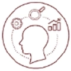
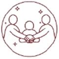
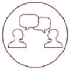
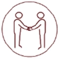
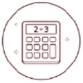

Lesson information
| Teacher | Nilasha Sempon | Grade | Grade 8 Advanced · Science |
|---|---|---|---|
| Unit | Module: Electromagnetic Forces · Lesson 4 Electromagnetism (review) | Type | Review lesson |
| Duration | 45 minutes | Slides | 24 interactive slides, with a 3 min 39 s narrated video (8 pause questions) |
Success criteria
- I can describe the magnetic field around a wire.
- I can explain how to make an electromagnet stronger.
- I can name the main parts of an electric motor.
- I can explain how a generator makes a current.
- I can tell the difference between AC and DC.
Key vocabulary
- Electromagnetism: The interaction between electric charges and magnets.
- Magnetic field: The area around a magnet or a current where a magnetic force acts.
- Electromagnet: A temporary magnet: a coil of wire with a current around a magnetic (iron) core.
- Electric motor: A device that uses an electric current to make motion.
- Commutator: A switch that reverses the current in the coil of a motor.
- Electric generator: A device that uses a magnetic field to change mechanical energy into electric energy.
- Direct current (DC): Current that flows in one direction only.
- Alternating current (AC): Current that changes direction in a regular pattern.
UAE National Charter
Skills developed in this lesson:

Critical Thinking Reading and Writing
Reading and Writing
Teamwork Integrity
Integrity
Effective Communication Initiative and Perseverance
Initiative and Perseverance
Respect and Kindness
Numeracy Self-Regulation and Discipline
Self-Regulation and Discipline
National Identity and values links:
 National Identity
National Identity Lifelong Learning
Lifelong Learning Cooperation
Cooperation Innovation
Innovation Excellence
ExcellenceValues Team coaches: Shahin (Leadership), Fahim (Knowledge), Maha (Respect), Ahmed (Responsibility), Hessa (Tolerance).
Resources
- Interactive web lesson (this website) on the classroom screen; student devices
- Textbook: Module Electromagnetic Forces, Lesson 4 Electromagnetism (magnetic fields around wires, electromagnets, electric motors, generators, AC and DC)
- Optional hands-on lab: iron nail, insulated copper wire, 1.5 V battery, paper clips
Lesson procedure (45 minutes)
| Phase | Teacher activity (slides) | Student activity | Assessment | Charter skills |
|---|---|---|---|---|
| Objectives 0–3 min | Objective & key words
| Flip the key words | Teacher questioning | Reading and Writing |
| Starter 3–7 min | The 4 big questions
| Think–pair–share on the 4 investigation questions | Diagnostic: tap to check | Critical ThinkingEffective Communication |
| Video 7–15 min | Narrated review video
| Watch with subtitles; answer 8 pause questions | In-video questions with instant feedback | Reading and WritingEffective Communication |
| Textbook 15–22 min | Textbook review | Read the textbook pages and answer 2–3 questions each | Teacher questioning; tap to check | Reading and WritingNumeracy |
| Virtual labs 22–26 min | Build it! | Predict, test, explain; complete the challenges | Challenge checklists | Critical ThinkingNumeracyTeamwork |
| Activity 26–29 min | Sort it! | Team sorting cards | Self-checked sort | TeamworkCritical Thinking |
| Formative 29–35 min | Pause & check | Retry quiz with hints, true/false, word bank + matching | Formative quiz; worksheet out of 11 | Initiative and PerseveranceIntegrityReading and Writing |
| Think 35–40 min | Critical thinking + colours | Claim–evidence–reasoning, then Green / Orange / Purple task | Model answers; differentiated task | Critical ThinkingEffective CommunicationRespect and Kindness |
| Summative 40–45 min | Electromagnetism Master + exit | First-try quiz, exit ticket 3-2-1, star self-rating | Summative quiz out of 8 + exit ticket | IntegrityCritical ThinkingReading and Writing |
Differentiation
Students choose a colour on slide 20. Colours are shown without level names.
Green
- Complete: "A current makes a ______ field."
- Circle: a motor makes motion / electricity.
- True or false: an electromagnet can be turned off.
- Name one thing that uses a motor.
Answers:
1. magnetic
2. motion
3. True
4. A fan, hair dryer, car window…
1. magnetic
2. motion
3. True
4. A fan, hair dryer, car window…
Orange
- Give three ways to make an electromagnet stronger.
- Name the three main parts of a simple electric motor.
- Explain the difference between AC and DC.
Answers:
1. More current, more loops, an iron core.
2. Coil on a shaft, permanent magnet, battery.
3. DC: one direction (battery). AC: changes direction (generator).
1. More current, more loops, an iron core.
2. Coil on a shaft, permanent magnet, battery.
3. DC: one direction (battery). AC: changes direction (generator).
Purple
- Explain why a generator makes AC, not DC.
- A magnet sits still inside a coil. Why does the ammeter read zero?
- Explain how a motor and a generator are opposites, using the word "energy".
Answers:
1. The coil's sides pass the N and S poles in turn, so the current changes direction.
2. Only a moving magnet makes a current.
3. Motor: electric → mechanical energy. Generator: mechanical → electric energy.
1. The coil's sides pass the N and S poles in turn, so the current changes direction.
2. Only a moving magnet makes a current.
3. Motor: electric → mechanical energy. Generator: mechanical → electric energy.
Assessment summary
- Diagnostic: the 4 big questions (starter).
- Formative: 8 pause questions in the video, textbook questions, two sorts, retry quiz, true/false, fill the gaps (11 marks), critical thinking.
- Summative: first-try Electromagnetism Master quiz (8 questions), exit ticket and star self-rating.
- Extra practice: the Practice page (15 questions + key-word cards).
Reflection (teacher)
What went well? · What would I change next time? · Which students need support?